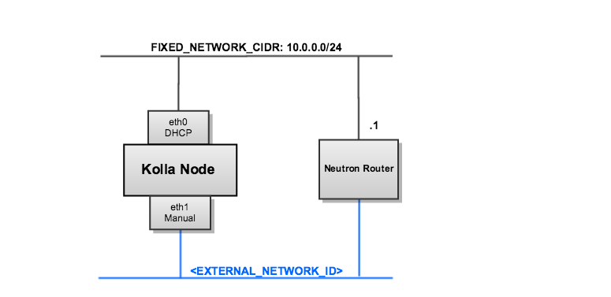

These Heat templates will deploy an N-node Kolla cluster, where N is the value of the number_of_nodes parameter you specify when creating the stack.
Kolla has recently undergone a considerable design change. The details of the design change is addressed in this spec. As part of the design change, containers share pid and networking namespaces with the Docker host. Therefore, containers no longer connect to a docker0 bridge and have separate networking from the host. As a result, Kolla networking has a configuration similar to:
Sharing pid and networking namespaces is detailed in the super privileged containers concept.
The Kolla cluster is based on Fedora 21, requires the minimum Docker version of 1.7.0 binary.
These templates are designed to work with the Icehouse or Juno versions of Heat. If using Icehouse Heat, this patch is required to correct a bug with template validation when using the “Fn::Join” function).
After cloning the project, run the get-image.sh script from the project’s devenv directory:
$ ./get-image.sh
The script will create a Fedora 21 image with the required modifications.
Add the image to your Glance image store:
$ glance image-create --name "fedora-21-x86_64" \
--file /var/lib/libvirt/images/fedora-21-x86_64 \
--disk-format qcow2 --container-format bare \
--is-public True --progress
Copy local.yaml.example to local.yaml and edit the contents to match your deployment environment. Here is an example of a customized local.yaml:
parameters:
ssh_key_name: admin-key
external_network_id: 028d70dd-67b8-4901-8bdd-0c62b06cce2d
container_external_network_id: 028d70dd-67b8-4901-8bdd-0c62b06cce2d
container_external_subnet_id: 575770dd-6828-1101-34dd-0c62b06fjf8s
dns_nameserver: 192.168.200.1
The external_network_id is used by Heat to automatically assign floating IP’s to your Kolla nodes. You can then access your Kolla nodes directly using the floating IP. The network ID is derived from the neutron net-list command.
The container_external_network_id is used by the nova-network container within the Kolla node as the FLAT_INTERFACE. The FLAT_INTERFACE tells Nova what device to use (i.e. eth1) to pass network traffic between Nova instances across Kolla nodes. This network should be separate from the external_network_id above and is derived from the ‘neutron net-list’ command.
The container_external_subnet_id: is the subnet equivalent to container_external_network_id
Review the parameters section of kollacluster.yaml for a full list of configuration options. Note: You must provide values for:
And then create the stack, referencing that environment file:
$ heat stack-create -f kollacluster.yaml -e local.yaml kolla-cluster
You can get the ip address of the Kolla nodes using the heat output-show command:
$ heat output-show kolla-cluster kolla_node_external_ip
"192.168.200.86"
You can ssh into that server as the fedora user:
$ ssh fedora@192.168.200.86
Once logged into your Kolla node, setup your environment. The basic starting environment will be created using docker-compose. This environment will start up the openstack services listed in the compose directory.
To start, setup your environment variables.
$ cd kolla
$ ./tools/genenv
The genenv script will create a compose/openstack.env file and an openrc file in your current directory. The openstack.env file contains all of your initialized environment variables, which you can edit for a different setup.
Next, run the start script.
$ ./tools/kolla-compose start
The start script is responsible for starting the containers using docker-compose -f <osp-service-container> up -d.
If you want to start a container set by hand use this template
$ docker-compose -f glance-api-registry.yml up -d
All Docker commands should be run from the directory of the Docker binary, by default this is /.
A few commands for debugging the system.
$ sudo ./docker images
Lists all images that have been pulled from the upstream kolla repository thus far. This can be run on the node during the ./start operation to check on the download progress.
$ sudo ./docker ps -a
This will show all processes that docker has started. Removing the -a will show only active processes. This can be run on the node during the ./start operation to check that the containers are orchestrated.
$ sudo ./docker logs <containerid>
$ curl http://<NODE_IP>:3306
You can use curl to test connectivity to a container. This example demonstrates the Mariadb service is running on the node. Output should appear as follows
$ curl http://10.0.0.4:3306
Trying 10.0.0.4...
Connected to 10.0.0.4.
Escape character is '^]'.